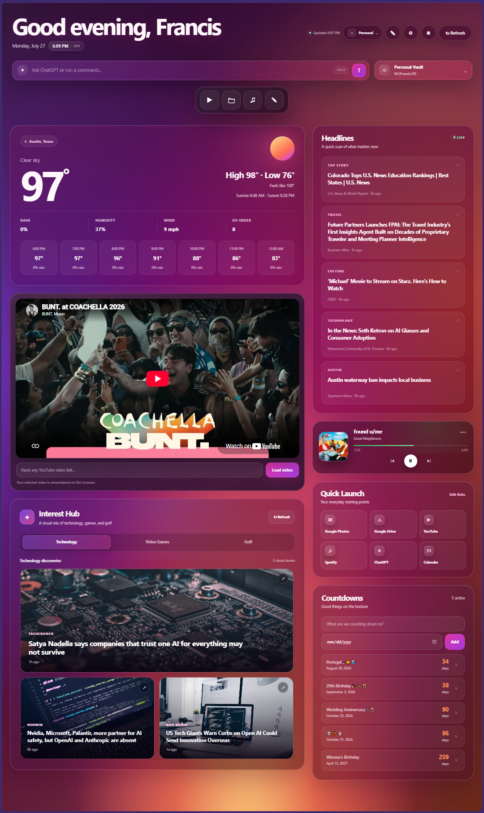

01
One adaptive workspace
Bring your day into a single environment that feels personal, useful, and ready the moment you open it.
Jupiter Context turns Windows into an AI-native command center, bringing your meetings, files, applications, media, and AI into one adaptive workspace.

Bring your day into a single environment that feels personal, useful, and ready the moment you open it.
Meetings, files, media, headlines, and tools are organized around what you are actually trying to accomplish.
Soft gradients, glass surfaces, and a calm interface turn the desktop into a command center you enjoy using.
Jupiter Context is for people who live across meetings, links, notes, applications, files, media, and AI every day — and want all of it to feel like one coherent system.
Start from one place. Move between work, personal life, and focus without rebuilding your environment every time.
Instead of opening five separate tools just to get oriented, Jupiter Context keeps everything within reach.
The alpha lays the foundation for a computer experience that understands intent instead of merely exposing software.
The first alpha focuses on the core Jupiter Context experience: a polished Windows workspace, a unified home surface, and the first version of the command-center workflow.